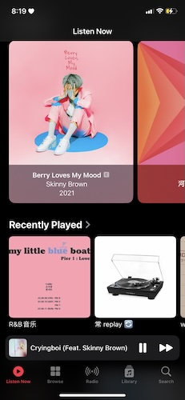

I am a big music listener and grew up listening to a lot of rock and pop music which most likely explains why I listen to a lot of music in my free time. The genres of music I really love listening to are Hip-Hop, R&B, and Pop. I also enjoy Rock, EDM/Dance, and Alternative but I don't listen to those genres as much as the first three I mentioned.